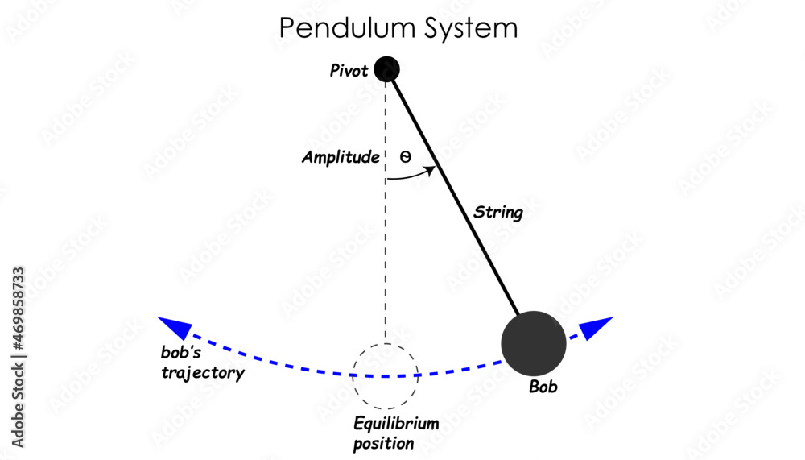

Problem 2: Analyze the Dynamics of a Damped Pendulum
1. Scope and Objectives
- Definition of a Damped Pendulum:
- A damped pendulum consists of a mass oscillating under gravity, attached to a pivot via a massless string or rod.
- Unlike an ideal pendulum, it experiences energy dissipation due to damping forces (e.g., friction at the pivot or air resistance), causing the amplitude to decrease over time.
- Goal of the Analysis:
- To investigate how damping alters the pendulum’s motion compared to the undamped case.
- To explore this through:
- Theoretical predictions of motion behavior.
- Analytical mathematical solutions for the linear case.
- Simulated behavior using numerical methods.
- Real-World Relevance:
- Damped pendulums model systems like:
- Mechanical clocks, where damping controls oscillation decay.
- Shock absorbers in vehicles, mitigating vibrations.
- Understanding damping is key to designing stable oscillatory systems.
2. Theoretical Framework
- Simple Pendulum (Undamped):
- Serves as the baseline for comparison.
- Governing Equation: $$ \frac{d^2 \theta}{dt^2} + \frac{g}{L} \sin(\theta) = 0 $$
- Small-Angle Approximation:
- For small \(\theta\), \(\sin(\theta) \approx \theta\), simplifying to: $$ \frac{d^2 \theta}{dt^2} + \omega_0^2 \theta = 0 $$
- Where \(\omega_0 = \sqrt{\frac{g}{L}}\) is the natural angular frequency.
-
Solution:
- Harmonic motion: \(\theta(t) = \theta_0 \cos(\omega_0 t + \phi)\).
- Period: \(T = 2\pi \sqrt{\frac{L}{g}}\).
-
Damped Pendulum:
- Introduces energy loss through damping.
- Governing Equation: $$ \frac{d^2 \theta}{dt^2} + b \frac{d \theta}{dt} + \frac{g}{L} \sin(\theta) = 0 $$
-
Linear Approximation:
- For small \(\theta\), \(\sin(\theta) \approx \theta\), yielding: $$ \frac{d^2 \theta}{dt^2} + b \frac{d \theta}{dt} + \omega_0^2 \theta = 0 $$
-
Parameters with Units:
- \(\theta\): Angular displacement (radians, rad)
- \(t\): Time (seconds, s)
- \(b\): Damping coefficient (per second, s⁻¹)
- \(g\): Gravitational acceleration (meters per second squared, m/s²)
- \(L\): Pendulum length (meters, m)
- \(\omega_0\): Natural frequency (radians per second, rad/s), \(\omega_0 = \sqrt{\frac{g}{L}}\)

3. Mathematical Analysis
- Solving the Linear Damped Equation:
- Characteristic Equation: $$ r^2 + b r + \omega_0^2 = 0 $$
- Roots:
- \(r = \frac{-b \pm \sqrt{b^2 - 4 \omega_0^2}}{2}\)
-
Damping Regimes:
- Overdamped (\(b^2 > 4 \omega_0^2\)):
- Real, distinct roots \( $r_1$ \) and \( $r_2$ \).
- Solution: $$ \theta(t) = A e^{r_1 t} + B e^{r_2 t} $$
- Motion decays exponentially without oscillation.
- Critically Damped (\(b^2 = 4 \omega_0^2\)):
- Repeated root \( $r = -\frac{b}{2}$ \).
- Solution: $$ \theta(t) = (A + B t) e^{-\frac{b}{2} t} $$
- Fastest return to equilibrium without oscillating.
- Underdamped (\(b^2 < 4 \omega_0^2\)):
- Complex roots \( $r = -\gamma \pm i \omega$ \), where:
- \(\gamma = \frac{b}{2}\) (damping factor, s⁻¹)
- \(\omega = \sqrt{\omega_0^2 - \gamma^2}\) (damped frequency, rad/s)
- Solution: $$ \theta(t) = C e^{-\gamma t} \cos(\omega t + \phi) $$
- Oscillatory motion with exponentially decaying amplitude.
-
Additional Variables:
- \(\theta'\): Angular velocity (radians per second, rad/s)
- \(\theta''\): Angular acceleration (radians per second squared, rad/s²)
-
\(T\): Damped period (seconds, s), \(T = \frac{2\pi}{\omega}\)
-
Nonlinear Case:
- The full equation \(\frac{d^2 \theta}{dt^2} + b \frac{d \theta}{dt} + \frac{g}{L} \sin(\theta) = 0\) is nonlinear due to \(\sin(\theta)\).
- Analytical solutions are not feasible for large angles; numerical methods (e.g., Runge-Kutta) are required to capture the true dynamics.
Vizualization available in my colab
Graphs of several pendulum in my colab
Website to see how a pendulum works with adjustable settings
4. Results Analysis
- Comparison of Damping Regimes:
- Underdamped:
- Oscillates with decaying amplitude.
- Damped period \(T = \frac{2\pi}{\omega}\) slightly longer than undamped \(T_0 = 2\pi \sqrt{\frac{L}{g}}\).
- Critically Damped:
- Returns to \(\theta = 0\) fastest without oscillation.
- Optimal damping for stability.
-
Overdamped:
- Slow, monotonic decay to \(\theta = 0\) without oscillation.
- Excessive damping delays equilibrium.
-
Energy Dissipation:
- Damping coefficient \(b\) controls the rate of energy loss.
- Underdamped: Energy dissipates gradually via oscillations.
-
Critically/overdamped: Energy dissipates directly to zero.
-
Validation:
- Compare simulated decay rate \(e^{-\gamma t}\) (where \(\gamma = \frac{b}{2}\)) to theoretical predictions.
- Check period \(T = \frac{2\pi}{\sqrt{\omega_0^2 - \left(\frac{b}{2}\right)^2}}\) in underdamped case.
5. Real world applications
1. Timekeeping (Grandfather Clocks)
- Description: A pendulum is used in mechanical clocks, such as grandfather clocks, to regulate time. The consistent period of a pendulum's swing, determined by its length and gravity, makes it an effective timekeeper.
- Key Concept: The period \( $T = 2\pi \sqrt{\frac{L}{g}}$\) (where \( $L $\) is length and \( $g$ \) is gravitational acceleration) remains nearly constant for small angles, enabling precise time measurement.
- Historical Note: Galileo Galilei observed this property in the 16th century, and Christiaan Huygens later perfected pendulum clocks in 1656.
2. Seismology (Seismometers)
- Description: Early seismometers used pendulums to detect ground motion caused by earthquakes. A suspended mass (acting as a pendulum) remains stationary relative to a moving frame, recording vibrations.
- Key Concept: The pendulum's inertia allows it to measure acceleration changes, with damping used to analyze the amplitude and frequency of seismic waves.
- Modern Use: While basic designs have evolved, the principle inspires inertial sensors in modern seismology.
3. Physics Education (Damped and Driven Oscillations)
- Description: Pendulums are a staple in physics labs to demonstrate harmonic motion, damping, and resonance. For example, a damped pendulum (like in your code) shows underdamped, critically damped, and overdamped behavior.
- Key Concept: The equation \($\ddot{\theta} + b\dot{\theta} + \frac{g}{L}\sin(\theta) = 0$\) models real-world energy loss, teaching students about differential equations and oscillatory systems.
- Application: Helps visualize theoretical concepts like phase space and energy dissipation.
4. Structural Engineering (Tuned Mass Dampers)
- Description: Tall buildings and bridges use pendulum-like devices called tuned mass dampers (TMDs) to reduce vibrations from wind or earthquakes. A heavy mass oscillates out of phase with the structure's motion.
- Key Concept: The pendulum's natural frequency is tuned to match the structure’s, counteracting sway (e.g., Taipei 101’s 660-ton TMD).
- Benefit: Enhances safety and comfort in skyscrapers by mimicking a damped pendulum’s energy absorption.
5. Gravitational Experiments (Foucault Pendulum)
- Description: The Foucault Pendulum demonstrates Earth's rotation. A long pendulum swings in a fixed plane while the Earth rotates beneath it, shifting its apparent path.
- Key Concept: The Coriolis effect causes the plane of oscillation to precess, with a period dependent on latitude (\( $T = \frac{24}{\sin(\lambda)}$ \) hours, where \( $\lambda$ \) is latitude).
- Famous Example: Installed in the Panthéon in Paris by Léon Foucault in 1851, it provided visual proof of Earth's rotation.
These examples show how pendulums bridge theory and practice, from everyday tools to cutting-edge engineering solutions.